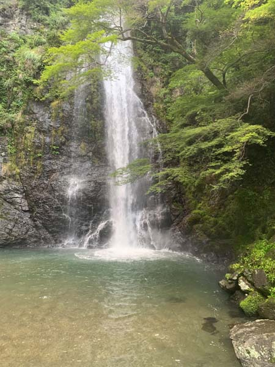
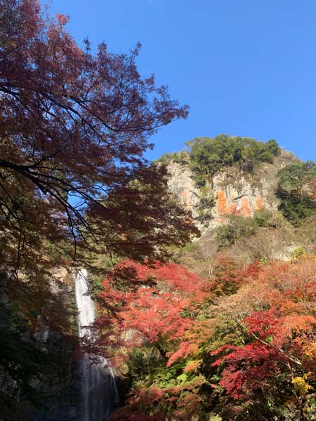
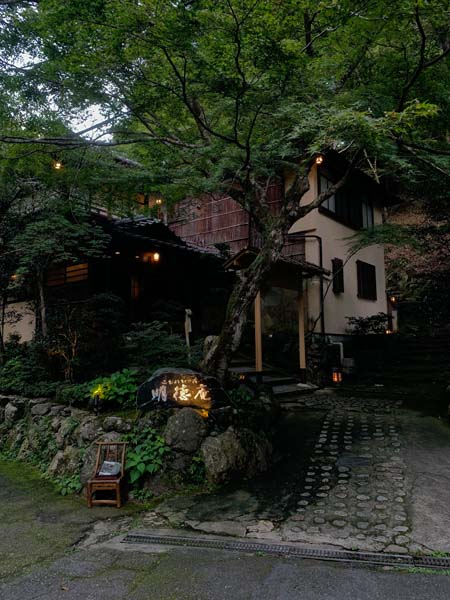
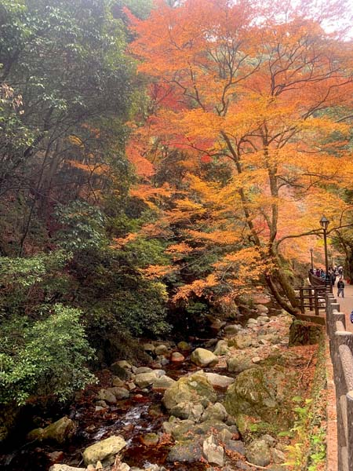
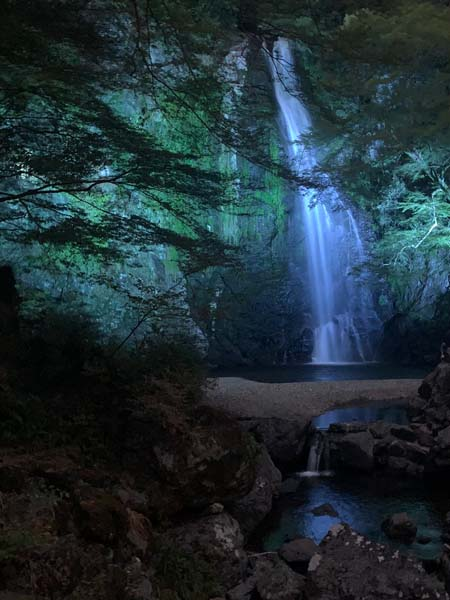
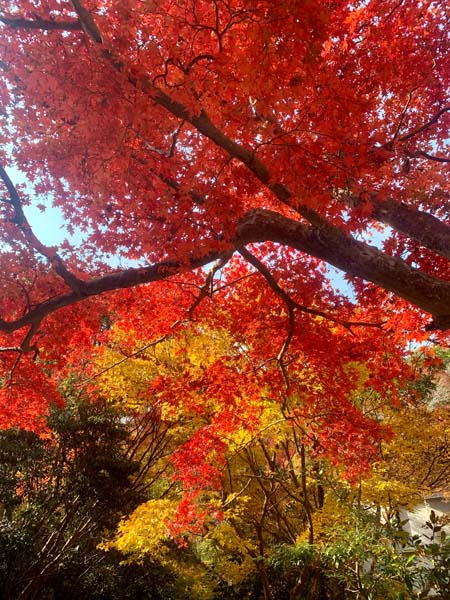
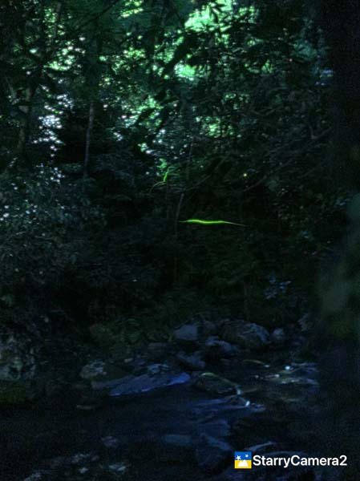
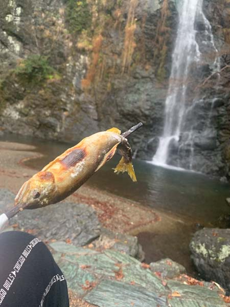

Minoh Falls
Minoh Falls is one of those places that makes it hard to believe you are still so close to Osaka. In Book 5 of "Divine Debris", a very young Byodoin watches fireflies over the Minoh River. The scene takes place so far back in his life that Minoh is not yet the place I know today. For him, there is no Osaka skyline waiting at the other end of the train line. There is simply the river, the forest, the darkness, and the tiny lights appearing above the water.
But it's a place worth visiting in modern days more than ever.
This is one of my favorite easy escapes from Osaka. The path follows the river almost the entire way, with the sound of running water accompanying you through the trees. It is paved rather than a rugged mountain trail, and the route to the waterfall is accessible enough to be enjoyed by people who aren't serious hikers. The park is officially listed as barrier-free, and electric-assist wheelchairs are also available for rental at certain times.
Minoh has been associated with nature and natural history for a long time. In the early Meiji period, Japanese and foreign entomologists began studying the insects of the Minoh forests, and numerous species were discovered here. The area became famous as one of Japan's great places for insect research, and in 1953 the Minoh Insect Museum was established. Today the museum has around 10,000 insect specimens and a butterfly garden where you can see living butterflies.
And if you are interested in Japanese folklore, there is something particularly appropriate about walking through a landscape where the boundary between an ordinary forest and a world full of strange creatures can feel rather thin.
There is also an old religious history here. Minoh Mountain was regarded as a sacred place for mountain asceticism, and temples such as Ryuanji, better known as Taki-an-ji, were established here centuries ago. Local tradition says that a dragon or water deity lived in the waterfall. The connection between the mountain, the waterfall and water worship is particularly old: the river was essential to the people living downstream, so the water itself naturally became part of the area's religious imagination.
And fireflies really do appear here.
Every June, Genji fireflies emerge along the Minoh River and the Takimichi path. The main season is usually around the middle to the end of June, although the exact timing depends on the weather and conditions. The fireflies are wild rather than introduced, which makes the experience feel particularly special. The brightest activity is usually around nine in the evening.
Unfortunately, the number of fireflies has been declining, and seeing a large number of them is no longer something anyone can take for granted. They are also extremely sensitive to their environment. The Minoh tourism association asks visitors not to catch them, touch them, or shine lights at them, and to keep noise down along the river.
But on a good night, they are still magical.
You walk along the dark river and gradually notice one small light, then another. Eventually there may be dozens of them flickering between the trees. They simply appear and disappear in the darkness, as if someone is quietly switching tiny lamps on and off.
That is the image I had in mind when I wrote young Byodoin watching the fireflies.
Minoh is also spectacular at completely different times of year. The fresh green of spring and summer gives way to the famous autumn foliage, when the valley becomes one of Osaka's best-known places for momiji. Minoh's reputation as a place for enjoying autumn leaves goes back centuries, and the modern park still draws large numbers of visitors during the season.
It is a place close enough to Osaka to visit for an afternoon, but old and quiet enough that it is very easy to imagine that some of the things living here have been watching the river for much longer than we have.